I want my images to tell stories. It is often easier me to draw an abstraction of how I feel, so a lot of my work is along that (quiet, wordless) theme. Additionally, I enjoy collaborating with other writers and artists, especially creating for print.
 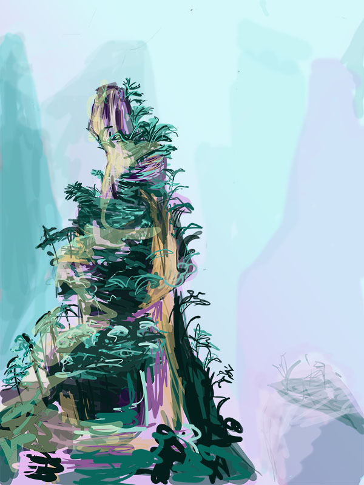
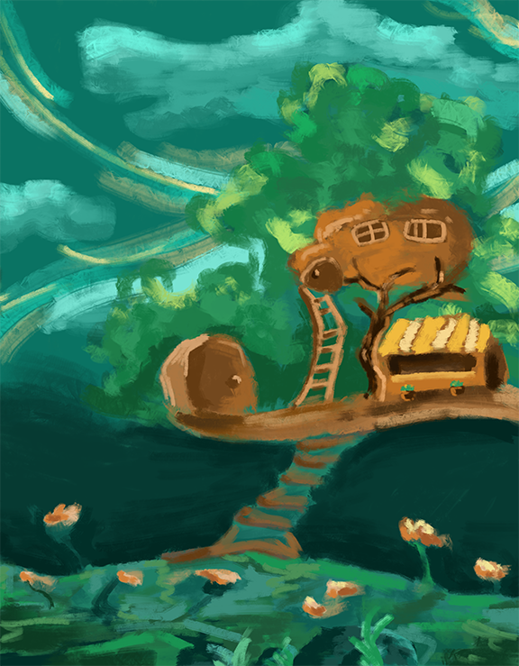
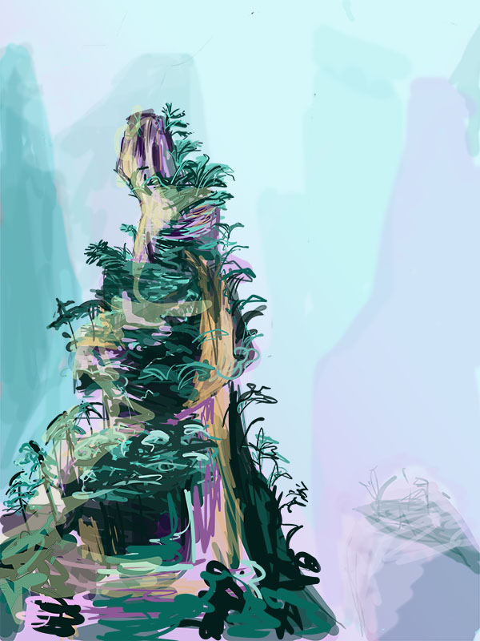
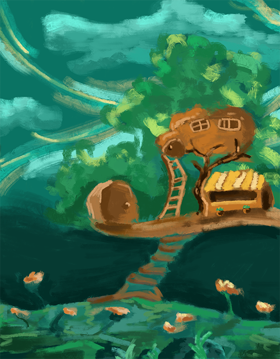
Left to Right: 1) Collab with Star for the College Independent's Ephemera section. 2) Mountain study, one of my first digital works. 3) Peanut house.

Left to Right: 1) Bodily Container illustration for STEAM stories. 2) Accompany illustration for a pitch for a design fiction workshop about writing.
 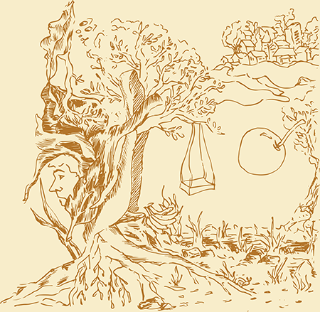
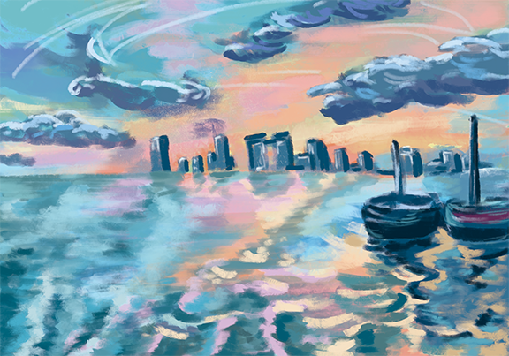
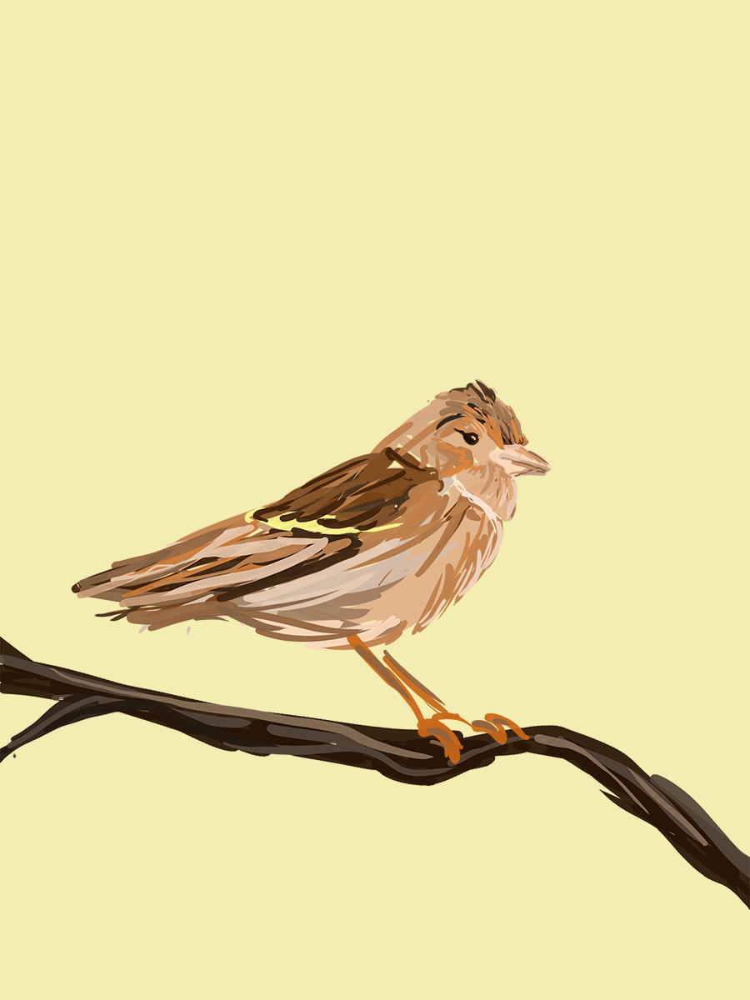
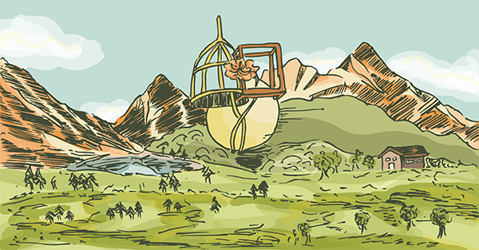
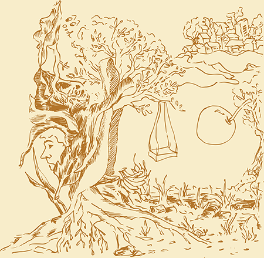
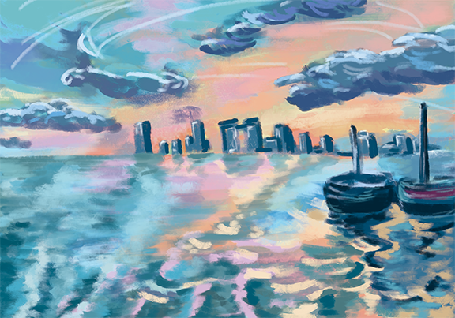
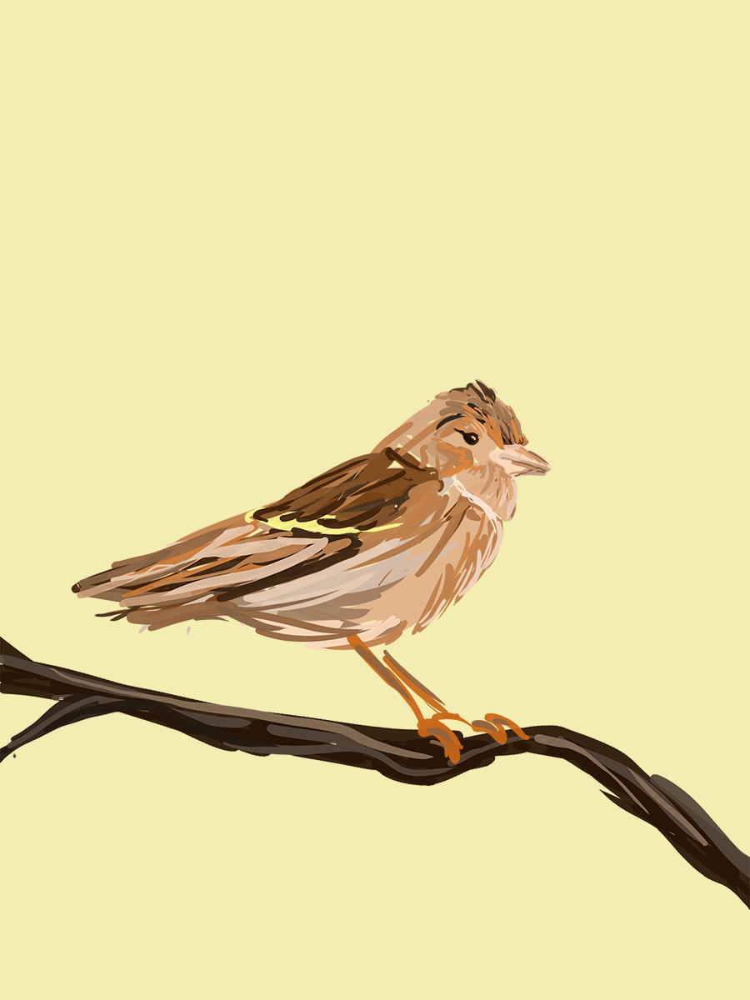
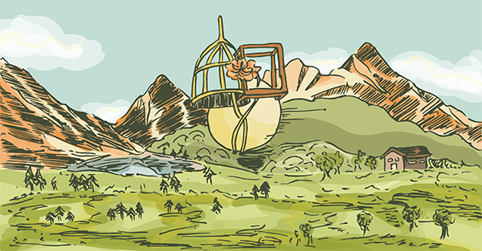

These were for fun! I do a lot of freehand drawing in my sketchbook. After, I scan and color in Photoshop.

 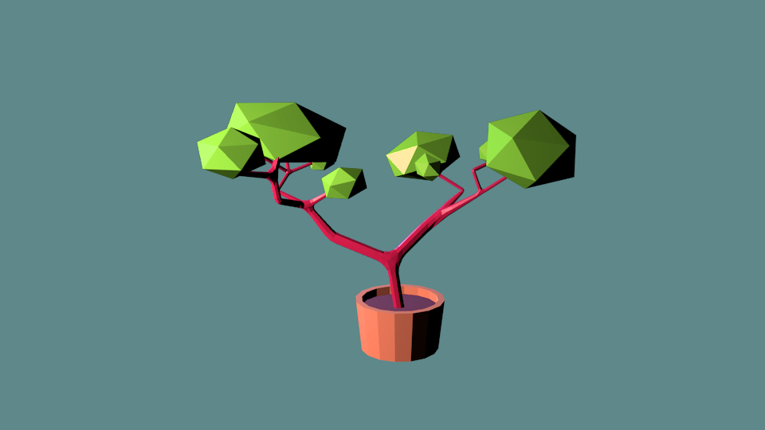
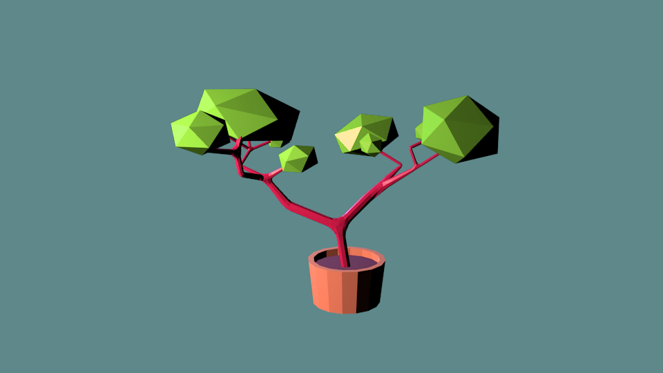
In the summer of 2019, I also began learning 3d modeling for fun! Here are some low poly works I made in Blender. I have a lot of fun messing with the shaders to make glass and water.
Bookbinding is a newfound hobby that I began in the spring of 2019, when I threaded my own zines with my roommate's sewing kit. Now, I make my own sketchbooks, as well as gift them to friends. Let me make you a book!
Celebration of the Mundane, Fall 2019.